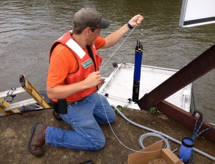

Assessment of Illinois River and other rivers for hydraulic and water-quality influences on Asian carps movement, spawning and recruitment

The upstream movement of Asian carp through the Illinois River has been observed and recorded by the Illinois Department of Natural Resources (IDNR), the U.S. Fish and Wildlife Service (USFWS) and the U.S. Army Corps of Engineers (USACE). These efforts have documented the distribution of the Asian carp population within the pools of the Illinois River and have identified habitats favorable for Asian carp. Since 2006, the upstream expansion of the carp population has stalled in the Marseilles and Dresden Island Pools. Sharp contrasts in habitat, flow conditions, water quality, and food supply between these pools and the Chicago Area Waterway System may be acting as controlling factors to the stalled movement. In addition to the Illinois River, other rivers, such as the Wabash River in Indiana and reservoir tributaries in Missouri, provide an opportunity to examine factors that influence Asian carp movement, spawning, and recruitment. These rivers represent the lower end of the size range thought to be used by Asian carps for spawning. A major objective of this project is to determine the controlling factor(s), with the possibility that one or more of these factor(s) could be used to prevent future expansion into additional rivers or to reduce Asian carp populations.
Several techniques will be used to characterize these potential controlling factors and data collection will be coordinated with the other agencies efforts to provide maximum complementary data collection and analysis. Flow, velocity and a suite of water-quality parameters (water temperature, pH, dissolved oxygen, specific conductance, chlorophyll-a, blue-green algae, nitrate and turbidity) will be collected in the main channel and backwater areas of the river. Plankton sampling data from the Illinois Department of Natural History will be used to characterize the available food supply in this reach of the river. Day-to-day movement of Asian carp recorded from field observations and telemetered fish (IDNR/USFWS/USACE/Southern Illinois University (SIU)) will be analyzed with the flow and water-quality data to evaluate fish response to changing flow conditions. Existing data, including long-term water-quality sampling by the Metropolitan Water Reclamation District (MWRD) of Greater Chicago will be reviewed. In addition to a greater understanding of why Asian carp have not moved further upstream, the velocity and flow data will be evaluated to determine optimum locations (channel constrictions, pinch points, backwater areas, etc.) within the river that may be suitable for the testing of Asian carp control strategies. The applicability of this methodology will be evaluated for the downstream sections of the Illinois River.
Greater understanding of Asian carps preferred habitat with regards to hydraulic and water-quality characteristics and insight into how habitat may be altered to deter them from spreading into new areas.
Findings will be reported as the project progresses.
The hydraulic and water-quality data collected in the Illinois River backwater near Morris, Illinois and in the main channel at Seneca, Illinois are available in real-time.
Jim Duncker, jduncker@usgs.gov
Illinois Water Science Center
217-328-9710